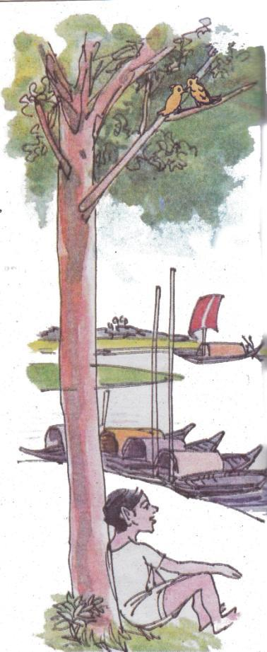
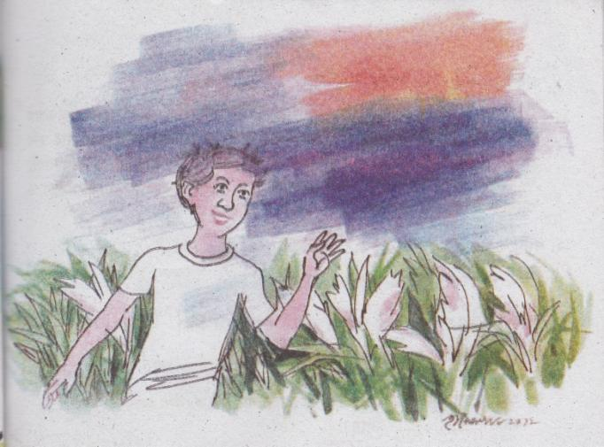
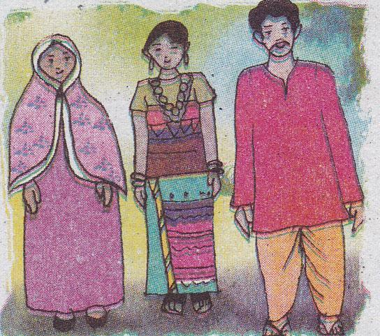

স্বদেশ
আহসান হাবীব
এই যে নদী
নদীর জোয়ার
নৌকা সারে সারে,
একলা বসে আপন মনে
বসে নদীর ধারে-
এই ছবিটি চেনা।
মনের মধ্যে যখন খুশি
এই ছবিটি আঁকি,
এক পাশে তার জারুল গাছে
দুটি হলুদ পাখি-
এমনি পাওয়া এই ছবিটি
কড়িতে নয় কেনা।
মাঠের পরে মাঠ চলেছে
নেই যেন এর শেষ
নানা কাজের মানুষগুলো
আছে নানান বেশ।
মাঠের মানুষ যায় মাঠে আর
হাটের মানুষ হাটে।
দেখে দেখে একটি ছেলের
সারাটি দিন কাটে।

এই ছেলেটির মুখ
সারাদেশের সব ছেলেদের
মুখেতে টুকটুক।
কে তুমি ভাই,
প্রশ্ন করি যখন
‘ভালোবাসার শিল্পী আমি’
বলবে হেসে তখন।
‘এই যে ছবি এমন আাঁকা
ছবির মতো দেশ,
দেশের মাটি দেশের মানুষ
নানা রকম বেশ,
বাড়ি বাগান পাখপাখালি
সব মিলে এক ছবি,
নেই তুলি নেই রঙ, তবুও
আঁকতে পারি সবই’।

অনুশীলনী
১. কবিতাটির মূলভাব জেনে নিই।
বাংলাদেশের নদীমাতৃক দেশ, অর্থাৎ এদেশে সবখানেই নদী দেখা যায়। ‘স্বদেশ’ কবিতায় বাংলাদেশের প্রকৃতি ও মানুষের জীবনযাত্রার ছবি তুলে ধরা হয়েছে। একটি ছেলে সেই ছবি দেখছে ও তার মনের ভিতরে ধরে রাখছে। নদীর জোয়ার, নদীর তীরে নৌকা বেঁধে রাখা, গাছে গাছে পাখির কলকাকলি - সবই ছেলেটির মনে নিজের দেশের জন্য মায়া-মমতা ও ভালোবাসার অনুভূতি জোগাচ্ছে।
২. শব্দগুলো পাঠ থেকে খুঁজে বের করি। অর্থ বলি।
|
কড়ি |
টুকটুক |
শিল্পী |
পাখপাখালি |
৩. ঘরের ভিতরের শব্দগুলো খালি জায়গায় বসিয়ে বাক্য তৈরি করি।
|
টুকটুকে |
শিল্পী |
পাখপাখালির |
কড়ি |
ক. এদেশে আগে এখনকার মতো টাকাপয়সা ছিল না। লোকে কেনা-বেচা করত […………………] দিয়ে।
খ. মেলা থেকে বোনের জন্য [……………………………………] একটা জামা কিনে আনব।
গ. জয়নুল আবেদিন ছিলেন একজন বড় মাপের চিত্র [……………………………………… ..]।
ঘ. বাংলাদেশের গাছে গাছে শোনা যায় [……………………………………………..] কলকাকলি।
৪. নিচের প্রশ্নগুলোর উত্তর বলি ও লিখি।
ক. গ্রাম বাংলার কোন ছবিটি আমাদের চেনা?
খ. কোন ছবিটি টাকা দিয়ে কেনা যায় না?
গ. স্বদেশ কবিতায় কী দেখে ছেলেটির দিন কেটে যায়?
ঘ. ‘সব মিলে এক ছবি’ বলতে কী বোঝানো হয়েছে?
৫৩৫. নিচের কথাগুলো বুঝে নিই।
(ক) এমনি পাওয়া এই ছবিটি কড়িতে নয় কেনা।
বাংলাদেশ চির সবুজের দেশ। সোনালী আঁশের দেশ। শস্য শ্যামল বাংলদেশের মাঠে মাঠে নানা ফসলের খেত। গাছে গাছে পাখি। এঁকেবেঁকে চলেছে অসংখ্য নদী। এর একদিকে পাহাড় আর অন্য দিকে সাগর। সবকিছুতেই প্রকৃতির এক অপরূপ ছোঁয়া। শিল্পী রং তুলি দিয়ে এ প্রকৃতিরই ছবি আাঁকেন। কখনো কখনো তা বিক্রি হয়। অনেকে কিনে নেন। কিন্তু শান্ত-শ্যামল প্রকৃতির এই মন জুড়ানো ছবি টাকা পয়সা দিয়ে কেনা যায় না।
(খ) মাঠের পরে মাঠ চলেছে নেই যেন এর শেষ।
সুজলা সুফলা শস্য শ্যামলা আমাদের এই বাংলাদেশ। মাঠে মাঠে ফসলের খেত। বাতাস বয়ে যায় তার ওপর দিয়ে। মনে হয়, নদীর ঢেউ মাঠে ছড়িয়ে পড়েছে। অবারিত খোলা সবুজ মাঠ, মাঝে মাঝে গ্রাম, আবার মাঠ। গ্রাম মাঠের সাথে মিশে যায়। মনে হয় সবকিছু মাঠের উপাদান। মাঠের পর মাঠ চলে গেছে, কোথাও শেষ হচ্ছে না।
(গ) এই যে ছবি এম আাঁকা ছবির মতো দেশ, দেশের মাটি দেশের মানুষ নানা রকম বেশ,
নদী, নালা, পাহাড়, সমুদ্র সব মিলে এদেশ একটি ছবির মতো। এদেশের প্রতিটি ঋতু বৈচিত্রময়। বিভিন্ন ধরনের মানুষের দেশ এটা। প্রকৃতি মাঝে মাঝে রং বদলায়। যেমন ছবিতে নানান রং ব্যবহার করা হয়। এদেশের মানুষজনও নানারকমের বেশভূষা পরেন। সব মিলিয়ে সুন্দর এদেশ।

৬. ঠিক উত্তরটিতে টিক () চিহ্ন দিই।
ক. নদীর তীরে সারি সারি কী রাখা ছিল?
১. জেলেদের জাল
২. গাছের গুঁড়ি
৩. খড়ের গাদা
৪. নৌকা
খ. ছেলেটির সারাদিন কীভাবে কাটে?
১. খেলাধূলা করে
২. মাঠের মানুষ আর হাটের মানুষ দেখে
৩. পড়াশোনা করে
৪. বন্ধুদের সঙ্গে গল্পগুজব করে
গ. ‘স্বদেশ’ কবিতায় ছেলেটি কীভাবে তার ছবি আঁকে?
১. রং তুলি দিয়ে
২. রং তুলি ছাড়া
৩. নিজের মনের মধ্যে
৪. মা বাবার সহযোগিতা নিয়ে
ঘ. ‘স্বদেশ’ কবিতায় কবি বাংলাদেশের কোন ছবিটি তুলে ধরেছেন?
১. বাংলাদেশের শহরের মানুষের ছবি
২. নদীর পাড়ের জেলেদের ছবি
৩. বাংলাদেশের পাহাড়ি মানুষের ছবি
৪. বাংলাদেশের প্রকৃতি ও মানুষের জীবনযাত্রার ছবি
ঙ. ‘এই ছেলেটির মুখ সারাদেশের সব ছেলেদের মুখেতে টুকটুক’- কথাটি কী অর্থে বোঝানো হয়েছে?
১. ছেলেটির মুখের রং
২. ছেলেটির মুখের গড়ন
৩. ছেলেটির মুখের প্রতিচ্ছবি
৪. ছেলেটির মুখের কথা
৫৫৭. শূন্যস্থান পূরণ করি।
‘এই যে ছবি …………………………………
……………………………. মতো দেশ,
……………………….. দেশের মানুষ
নানা রকম বেশ,
বাড়ি বাগান ……………………..
সব মিলে এক ……………………….
নেই …………….. নেই ………………………. তবুও
আঁকতে পারি সবই। ’
৮. ডানদিক থেকে কবিতায় ব্যবহৃত ঠিক কথাটি নিয়ে খালি জায়গায় বসাই।
ক. একলা বসে আপন মনে বসে […………………]। পুকুর পড়ে/গাছের তলে/নদীর ধারে
খ. এমনি পাওয়া এই ছবিটি […………………………] নয় কেনা। টাকায়/কড়িতে/সোনায়
গ. এক পাশে তার জারুল গাছে দুটি […………….]। হলুদ পাখি/জারুল পাখি/শালিক পাখি
৯. কর্ম-অনুশীলন।
নিচের নির্দেশনা অনুযায়ী আমাদের দেশ সম্পর্কে একটি রচনা লিখি।
আমাদের দেশের নাম, দেশের সীমারেখা ও আয়তন, রাজধানী, বিভাগীয় শহর, প্রধান প্রধান নদনদী, জনসংখ্যা ও ভাষা, জাতীয় প্রতীকসমূহ (ফুল, ফল, মাছ, পশু, পাখি), প্রকৃতি ও পরিবেশ।
কবি-পরিচিতি
কবি আহসান হাবিব ২রা জানুয়ারি ১৯১৭ সালে পিরোজপুর জেলার শঙ্করপাশা গ্রামে জন্মগ্রহণ করেন। শিশু-কিশোরদের জন্য তিনি প্রচুর ছড়া ও কবিতা লিখেছেন। তাঁর কবিতার ছন্দ ও শব্দ সহজেই মন কাড়ে। তিনি ছিলেন পেশায় সাংবাদিক। তিনি দীর্ঘদিন নানা পত্রিকার সাহিত্যের পাতার সম্পাদকের দায়িত্ব পালন করেছেন। ‘বৃষ্টি পড়ে টাপুর টুপুর’ ও ‘ছুটির দিন দুপুরে’ তাঁর শিশুতোষ কাব্যগ্রন্থ। ১০ই জুলাই ১৯৮৫ সালে তিনি মৃত্যুবরণ করেন।
৫৬